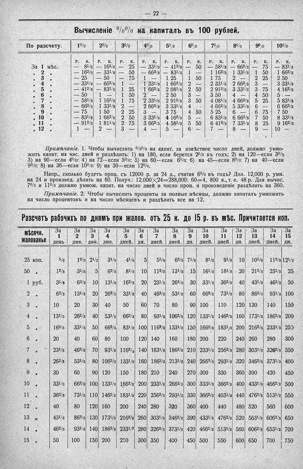

Лист источника 68
Скан

Распознанный текст
- 22 -
Вычисленіе %% на капиталъ въ 100 рублей.
По разсчету. 1% 2% 3% 4% 5% 6% 7% 8% 9% 10%
Р. К. Р. К. Р. К. Р. К. Р. К. Р. К. Р. К. Р. К. Р. К. Р. К.
За 1 мѣс. — 81/3 — 162/3 — 25 — 331/3 — 412/3 — 50 — 581/3 — 662/3 — 75 — 831/3
„ 2 „ — 162/3 — 331/3 — 50 — 662/3 — 831/3 1 — 1 162/3 1 331/3 1 50 1 662/3
„ 3 „ — 25 — 50 — 75 1 — 1 25 1 50 1 75 2 — 2 25 2 50
„ 4 „ — 331/3 — 662/3 1 — 1 331/3 1 662/3 2 — 2 331/3 2 662/3 3 — 3 331/3
„ 5 „ — 412/3 — 831/3 1 25 1 662/3 2 081/3 2 50 2 912/3 3 331/3 3 75 4 162/3
„ 6 „ — 50 1 — 1 50 2 — 2 50 3 — 3 50 4 — 4 50 5 —
„ 7 „ — 581/3 1 162/3 1 75 2 331/3 2 912/3 3 50 4 081/3 4 662/3 5 25 5 831/3
„ 8 „ — 662/3 1 331/3 2 — 2 662/3 3 331/3 4 — 4 662/3 5 331/3 6 — 6 662/3
„ 9 „ — 75 1 50 2 25 3 — 3 75 4 50 5 25 6 — 6 75 7 50
„ 10 „ — 831/3 1 662/3 2 50 3 331/3 4 162/3 5 — 5 831/3 6 662/3 7 50 8 331/3
„ 11 „ — 912/3 1 811/3 2 75 3 662/3 4 581/3 5 50 6 412/3 7 331/3 8 25 9 162/3
„ 12 „ 1 — 2 — 3 — 4 — 5 — 6 — 7 — 8 — 9 — 10 —
Примѣчаніе. 1. Чтобы вычислить %% на капит. за извѣстное число дней, должно умно-
жить капит. на чис. дней и раздѣлить: 1) на 180, если берется 2% въ годъ; 2) на 120—если 3%
3) на 90—если 4%; 4) на 72—если 5%; 5) на 60—если 6%; 6) на 45—если 8%; 7) на 40—если
9%; 8) на 36—если 10%; 9) на 30—если 12%.
Напр., сколько будетъ проц. съ 12000 р. за 24 д., считая 6% въ годъ? Дол. 12,000 р. умн.
на 24 и произвед. дѣлить на 60. Получ.: 12,000✕24=288,000: 60=4, 800 к., т. е. 48 р. Для вычис.
7% и 11% должно умнож. капит. на число дней и число проц. и произведеніе раздѣлить на 360.
Примѣчаніе. 2. Чтобы вычислить проценты за полные мѣсяцы, должно капиталъ умножить
на число процентовъ и на число мѣсяцевъ и раздѣлить все на 12.
Разсчетъ рабочихъ по днямъ при жалов. отъ 25 к. до 15 р. въ мѣс. Причитается коп.
Мѣсячн. жалованье За 1 день За 2 дня. За 3 дня. За 4 дня. За 5 дней. За 6 дн. За 7 дней. За 8 дней. За 9 дн. За 10 дней. За 11 дней. За 12 дн. За 13 дней. За 14 дней. За 15 дн.
25 коп. 5/6 12/3 21/2 31/3 41/6 5 55/6 62/3 71/3 81/3 91/6 10 105/6 112/3 121/2
50 „ 12/3 31/3 5 62/3 81/3 10 112/3 131/3 15 161/3 181/3 20 212/3 231/3 25
1 руб. 31/3 62/3 10 131/3 162/3 20 231/3 262/3 30 331/3 362/3 40 431/3 462/3 50
2 „ 62/3 131/3 20 262/3 331/3 40 462/3 531/3 60 662/3 731/3 80 862/3 931/3 100
3 „ 10 20 30 40 50 60 70 80 90 100 110 120 130 140 150
4 „ 131/3 262/3 40 531/2 662/3 80 931/3 1062/3 120 1331/3 1462/3 160 1731/3 1862/3 200
5 „ 162/3 331/3 50 662/3 831/3 100 1162/3 1331/3 150 1662/3 1831/3 200 2162/3 2331/3 250
6 „ 20 40 60 80 100 120 140 160 180 200 220 240 260 280 300
7 „ 231/3 462/3 70 931/3 1162/3 140 1631/3 1862/3 210 2331/3 2562/3 280 3031/3 3262/3 350
8 „ 262/3 531/3 80 1062/3 1331/3 160 1862/3 2131/3 240 2662/3 2931/3 320 3462/3 3731/3 400
9 „ 30 60 90 120 150 180 210 240 270 300 330 360 390 420 450
10 „ 331/3 662/3 100 1331/3 1662/3 200 2331/3 2662/3 300 3331/3 3662/3 400 4331/3 4662/3 500
11 „ 362/3 731/3 110 1462/3 1831/3 220 2562/3 2931/3 330 3662/3 4031/3 440 4762/3 5131/3 550
12 „ 40 80 120 160 200 240 280 320 360 400 440 480 520 560 600
13 „ 431/3 862/3 130 1731/3 2162/3 260 3031/3 3462/3 390 4331/3 4762/3 520 5631/3 6062/3 650
14 „ 462/3 931/3 140 1862/3 2331/3 280 3262/3 3731/3 420 4662/3 5131/3 560 6062/3 6531/3 700
15 „ 50 100 150 200 250 300 350 400 450 500 550 600 650 700 750